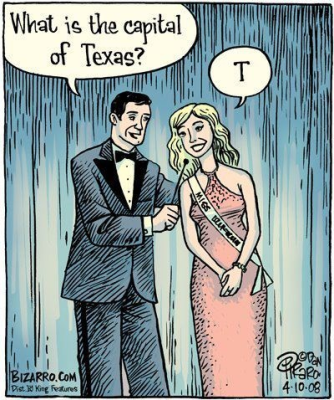
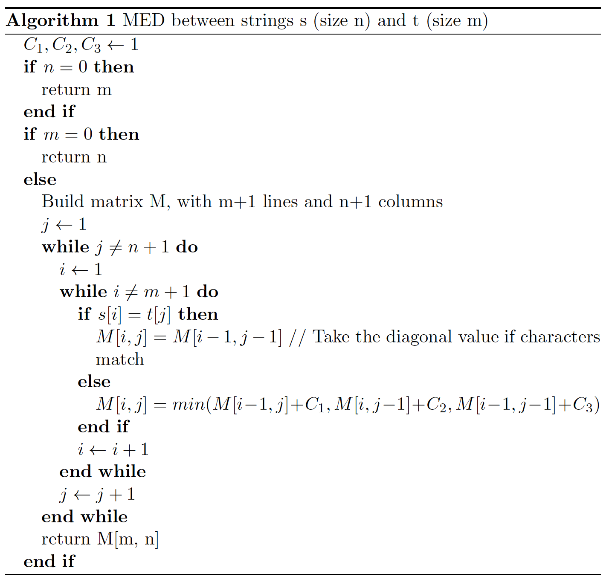

As we will see its not just for F.R. David that words don’t come easy…
Words don’t come easy
Text by: Luísa Coheur
In this chapter we will study words. As we will see, not even its definition is so obvious as it might seems. You will learn what we do to words in NLP and believe me, we are not nice with the poor words: we cut them in little pieces, we analyze the little pieces, we compare the little pieces, we play with their sounds and, sometimes, we simply eliminate words, with no mercy (Muahahahaha!).
The meaning of the word “word”
What does the word “word” means? Well, consider the following sentence:
Na Sexta-feira hei-de ir a Viana do Castelo a pé.
How many words are there in this sentence? You probably counted 10. Hum…
- Na is a contraction (preposition em plus article a). Should we count one or two words?
- Sexta-feira seems to be a word, but somebody may argue that sexta and feira are also words, right?
- With the new orthography hei-de becomes hei de. Thus, hei de represents two words and hei-de a single word. So…
- Shouldn’t Viana do Castelo be counted as a single word as its meaning depends on the three words altogether?
- What about the two occurrences of the word a? Do they represent the same word or there is some subtle difference between them? Should we count it once or twice?
According to Priberam’s dictionary, a word, in computer science, is defined as: Elemento de informação armazenado ou tratado sem interrupção num computador they also define word as a term. What do they mean when they say sem interrupção? And what does term exactly mean?
I was never able to find a consensual definition of word. The previous definitions probably match what many people have in mind. However, for people working in NLP the concept depends on the application and, thus, we consider that something is a word (or not) if this helps our work.
Tokenization
Tokenization (or word segmentation) is the (not so trivial) process of identifying tokens in a text. Considering what you have previously seen, this process will depend on what you call “a word”. Therefore, the first thing to do is to decide which sequences of words should be considered as a single one. Then, punctuation is on your way and you will have to deal with that… Do you think you can properly handle tokenization? Well… maybe you can, if you consider the Portuguese language. However, remember that many other languages exist and that some have specificities that can turn tokenization into a really challenge (not to say nightmare). In the following you will understand what I mean.
Compounds
As previously stated, it might be important to treat all the compound terms, like Viana do Castelo, as single words (it is obvious that the unity of meaning is, in this case, the city Viana do Castelo). You might be tempted to think that only proper nouns (such as Joana Martins, Rua de Campolide or Instituto Superior Técnico) are in this situation, and that these are easy to identify (first mistake!), but you are wrong: more than proper names can be included in this process. For instance, what about chapéu de chuva that is no longer written with the hyphen? Or rampa para deficientes?
Once again, depending on your application, it can be useful to group some sequences of nouns that linguists would not even call compounds. In some cases, you can build a lexicon containing these words, which will help your task. However, even in restricted domains some automatization is (probably) needed to generate the different/alternative forms of the words in the compounds. Nevertheless, as some of the words in these sequences can be expanded and others can’t (as an example, we can say chapéus de chuva, but not chapéus de chuvas; you can also say rampa para deficientes or rampa de deficientes), the task of building patterns to automatically generate all the associated forms is also complicated.
So, in conclusion, depending on the application, you might decide to group compounds as a single unit of meaning or not. It might be really helpful to group them before moving to a posterior analysis, but it can be complex to do it.
Punctuation
And what about punctuation? Punctuation can bring several problems to the tokenization process. If question marks, for instance, do not cause many troubles in word identification, a period might be a problem. Consider, for instance, Sr., 55.5 and www.google.com. These terms contain periods and we have to tell, somehow, to the tokenizer that their dots do not represent the end of a sentence. Notice that if we can (more or less) easily build a list with a set of fixed words such as Sr., to be able to capture numbers or URLs you will probably need to use our beloved regular expressions. Notice also that some of these lists are language dependent.
Other scenarios
You know English, maybe French and Spanish, but even if you know German, you can’t say that you have the “whole picture”. This is because there are languages with some particularities that never crossed our minds and that can transform tokenization (and other NLP tasks) in a very complicated process. A good example is Chinese, as their sentences are sequences of characters without spaces between words (if this also happened in English, do you think nowherefast would mean nowhere fast or now here fast?). Just to give an idea of how challenging this can be, there are competitions where systems try to find the best way to tokenize Chinese. Apparently, a simple algorithm that analyzes the input left-to-right and consults a dictionary trying to find the longest meaningful sequences of characters can bring good results.
A synonym for complicated tokenization is agglutinative languages (such as Turkish and Russian). In these languages, words are formed by joining morphemes together, without fusing them. Almost every language have some words formed in this way, but for some this is the rule, not the exception. We will talk about this in some weeks and you will see how Portuguese is so… simple. :-)
Word’s manipulation
After having identified our words in a text, there are many things we can do to them that will help us in further processing.
Elimination
Some words are not very informative for the task in hands, and their presence only represents more rules and/or more processing. Thus, the first thing we can do is to get rid of them. A good example is the sequence é que in some Portuguese questions such as Onde é quefica o bar? , Quanto é que ganha o Cristiano Ronaldo?, Quando é que chegaste?. In all these sentences the é que can be eliminated without causing any interpretation problem: Onde fica o bar?, Quanto ganha o Cristiano Ronaldo?, Quando chegaste?.
In many applications people get rid of what we call stop words, which usually include functional words (prepositions, articles, etc.). Although stop words are language dependent, it is not very difficult to find lists of stop words for different languages in the web. In many cases to get rid of stop words is a good decision, but there are scenarios such as authorship identification where these words can be extremely important.
Exercise 9: Stop words
See if you can identify any of your friends by paying attention to their use of some specific words. Check if these are stop words or not.
Lowercasing
Another thing that can be very useful is to lowercase your data. This would allow Comi and comi from the sentence Comi sopa e comi muito bem to be treated as the same word. However, not everything rules for 100% in NLP and this can be a very bad idea in some applications. For instance, if you lowercase your text and you want to translated us, you don’t know if you should translate the proper noun US or the pronoun us. The same for the words Figo (the footballer) and figo (the fruit). Note, nevertheless, that in order to avoid data sparseness, it still can be important to lowercase your data.

Exercise 10: Lowercasing
Think about a word that has two different meanings whether it starts with a capital letter or not. Check Google results with the two hypotheses.
Normalization
Lowercasing can be seen as a normalization process, but many more normalization processes exist. For instance, you may want to normalize dates (April 4, 2019 vs. 04-04-2019), numbers (0.34 vs. 0,34 or 2000 m vs. 2 Km) and names (John Fitzgerald Kennedy vs. John F. Kennedy vs. John Kennedy). If you think about a QA system that uses the most frequent answer as the correct one, it seems obvious the need to perform this normalization step.
Exercise 11: Normalization
Why is so important for a QA system that is based in the redundancy of the attained possible answers to have these answers normalized?
Stemming and lemmatization
Stemming and lemmatization, although representing different concepts, are used as synonyms in many situations (the main difference is that stemming is normally associated with the idea of reducing a word and lemmatization can also add stuff to it)[1]. Let us consider in this course that they represent the same idea: transform words in a way that if they represent the same meaning they are captured by the same token. For instance, assassinou, assassino and assassinado could be stemmed/lemmatized in the form assassin.
This process is very useful in many applications, as it not also helps with the data sparseness problem, but it also allows the connection of words that, otherwise, would be left unrelated. For instance, if you type assassino D. Carlos in a search engine, a possible result in the sentence D. Carlos foi assassinado por Buiça can be found due to the stemming of the words assassino and assassinado.
Notice, however, that if you are searching for a table in Google, either if you type table or tables you will probably get similar results, but (and considering the perfect example presented by Jurafsky in his courses) if you are searching for a new window, if you write window or windows you will not obtain similar results and, in the last case, you will (probably) never find a new window.
A very well known stemmer is the Porter Stemmer, developed in 1979. It is rule-based and language dependent and might transform organization in organ, but has been used very successfully in many applications. If you have some time, give it a look (you can easily find many implementations in the web).
Exercise 12: Stemmer Think about a word that has two different meanings whether it ends with an “s” or not. Check Google results with the two hypotheses.
Comparing words
There are many applications where we have to compare words, as for instance to correct an unknown word. You can compare words taking into consideration their orthographic form (Monserate vs. Monserrate), but you can also check the way they sound (Monserrate vs. Munçerráte). In this section we will learn about some measures that allow us to compare words. We will see that these measures can also be adapted to compare sentences and, without using any linguistic information, you will learn how to build a very simple form of a “semantic analyser”.
Comparing strings
Algorithm 1 calculates the Minimum Edit Distance (MED) between two words, that is, the minimum number of transformations (insert, replace and delete) that need to be done in order to transform one of the words into the other. It builds a matrix and fills its cells with the cost associated with the needed transformations, taking into consideration the substrings of the words being processed (yes, dynamic programming). The cost associated with each one of the three possible transformations is given by C1 (delete in the source), C2 (insert in the source) and C3 (replace in the source). When C3 = 2, then we have the widely known Levenshtein distance. These measures can be customised to different applications. For instance, they can be adapted to take into consideration the device in use: if we are using a QWERTY keyboard to write the words, it is more probable to replace a “w” by a “q” than a “w” by a “l”.

Exercise 13: Minimum Edit Distance
Find the MED between the words batalha and barata. Create the matrix, fill it and don’t forget to precisely identify the MED. Also, identify the transformations and relate them with the matrix values.
These measures can also be used to calculate the distance between sentences (and not only words). For instance, consider an application that knows how to answer to Onde foi assassinado D. Carlos?. If the user states a new question as Onde é que foi assassinado D. Carlos?, it “only” has a MED of 2 from the original sentence. Thus, edit distances can be applied to this scenario as if a given sentence has a small difference from some sentence that the system knowns how to answer, maybe it can be considered similar to it and answered in the same way. Nevertheless, it might be necessary to use measures that do not take the order of words into consideration in such a strong way as MED does, so that D. Carlos foi assassinado onde? would also be considered similar to Onde foi assassinado D. Carlos?. Although the order of words in a sentence can be very important (Quem é filho de XPTO? vs. XPTO é filho de quem? or anos 80 vs. 80 anos), a measure that do not penalise so strongly some reordering could be welcome in this scenario. So, if the MED takes the order of the characters into consideration, the following measures don’t, as they treat sequences as sets or bags. This lead us to the concept of bag of words, a model widely used in NLP and Information Retrieval, in which sentences (and documents) are seen as a bag (not a set) of words. Grammar is ignored, as well as word order. However, word multiplicity is kept.
Jaccard (Equation bellow) obtains higher scores for strings that have similar length (a zero value means that there is nothing in common between two words; one is the highest possible value).
A different philosophy is used in the Dice measure, in which strings with different lengths are not so strongly penalized:
Exercise 14: Jaccard and Dice
Consider the words s=Saturday, t=Sunday and w=day. Considering the set approach, calculate:
- Jaccard(s, t)
- Jaccard(s, w)
- Dice(s, t)
- Dice(s, w)
Many more distances exist, tailored for different applications. However, another measure that should be mentioned, although is not used to compare strings, is the widely known term frequency–inverse document frequency (tf–idf). This measure calculates how important a word is in a document from a document collection, and is used, for instance, in Edgar to give weights to the words in the sentences we are comparing (by using the traditional measures). The motivation for this is that there are words occurring in each sentence that are also very frequent in many other sentences and that, thus, should not contribute to the comparison process with the same weight as words that are more specific to some questions.
There are many ways to calculate . The simplest one is by counting the number of occurrences of term in the document . The formula used to calculate is given by:
and finally the values are given by:
TF-IDF example
Consider the following corpus with only 2 sentences:
d1 = The dog is on the table
d2 = The cat is on the table
Given that corpus we can define a bag-of-words with the following words/terms: “the”, “cat”, “dog”, “is”, “on”, “table”.
After defining the terms, we represent the sentence “the dog is on the table” in a tf-idf space as follows:
| the | cat | dog | is | on | table | |
|---|---|---|---|---|---|---|
| 2 | 1 | 1 | 2 | 2 | 2 |
| the | cat | dog | is | on | table | |
|---|---|---|---|---|---|---|
| 2 | 0 | 1 | 1 | 1 | 1 |
Finally:
| the | cat | dog | is | on | table | |
|---|---|---|---|---|---|---|
| 0 | 0 | 0 | 0 | 0 |
Soundex
Besides comparing words by its characters, they can also be compared by the way they sound. Soundex (Russell, 1922) is a phonetic algorithm that allows to compare words by sound. It was written to be used for words pronounced in English. Its earlier applications targeted names’ indexing. For instance, consider the word Jurafsky. Imagine that his name is coded somehow in order to capture the way it sounds. If you are trying to find his book but you don’t know how to spell his name, if you manage to write something that is also mapped into the same key (representing the way it sounds), then you may find it. The following tries to capture the essence of Soundex:
- Retain the first letter of the name;
- Drop all occurrences of a, e, i, o, u, y, h, w (unless they appear in the first position).
- Replace consonants by digits, as follows (after the first letter):
- b, f, p, v → 1
- c, g, j, k, q, s, x, z → 2
- d, t → 3
- l → 4
- m, n → 5
- r → 6
- Two adjacent letters with the same number are coded as a single number (ex: 55 → 5)
- Continue until you have one letter and three numbers. If you run out of numbers, add zeros until there are three numbers (ex: L2 → L200); if you have too much numbers drop them after the third one (ex: L2345 → L234).
Exercise 15: Soundex
Find your name in soundex-form. Mine is L200 C600. You can call me that from now on.
In practice: meet Filipe, a conversational agent based on edit distances
Please read the paper “Please, read the paper “Using subtitles to deal with Out-of-Domain interactions”. This paper will allow you to understand how some of the present measures can be used to build a conversational agent.
Footnotes
- See http://www.ideaeng.com/stemming-lemmatization-0601 for a long discussion in “What’s the Difference Between Stemming and Lemmatization?” >